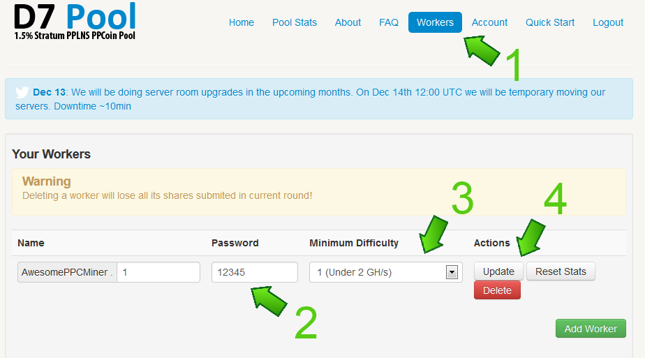
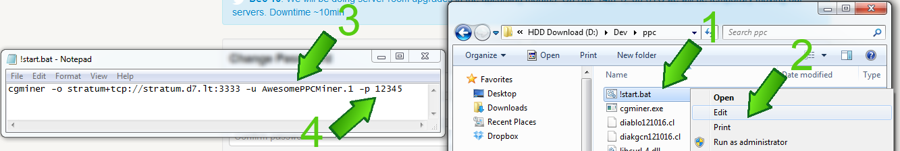

Introduction
Peercoin is a hybrid Proof-Of-Work / Proof-Of-Stake coin, with the same work algorithm as Bitcoin. This means you can mine with GPU's, FGPA's and ASICs using bitcoin mining software. With the increasing popularity of Peercoin, the slow switch to minting blocks, and the decreasing return on mining, competition for blocks becomes more fierce. Even with powerful hardware it is difficult to mine alone. Mining pools combine the power of all participants to find block, and share the reward based on shares. This guide shows you how to poolmine at one of the largest PPC pools.
Step #1: Setup the PPC wallet
Download the Peercoin-QT wallet if you did not do this already. Install, let it sync, and secure the wallet with a good password. You can find your wallet address on the receive tab.
Step #2: Sign Up
Go over to the pool website: https://ppcoin.d7.lt and sign up
Set-up your wallet address and specify a minimum payout, fill in 1. Don't forget to press update after setting both the fields.

Your workers are here, you can mine on multiple PC's. Remember the worker's details. Leave the difficulty as is.
Download the software from here. The link is where arrow 2 points to. The pool settings are where arrow 3 points
Download the zip file, and save it to C:/Peercoin. If the file downloaded without a .zip extension, rename it and add .zip to the end of the filename. Extract the archive and open the folder "ppc".
Step #3: Set-up the Miner
For the first worker, there is no set-up needed! Just double click start.bat and you should see this
In the above image [2] displays the mining rate and [3] are successful blocks accepted by the pool!

Now to add another worker, create a worker on the pool website and remember the details. Right click the start.bat file and click edit, press ok on the dialog.
Now edit the text behind the -u (see [3]) and -p (see [4]) flags to the settings of the new worker.
Save, hit start.bat and you are mining!
You can
see your results on the first page, see image one!